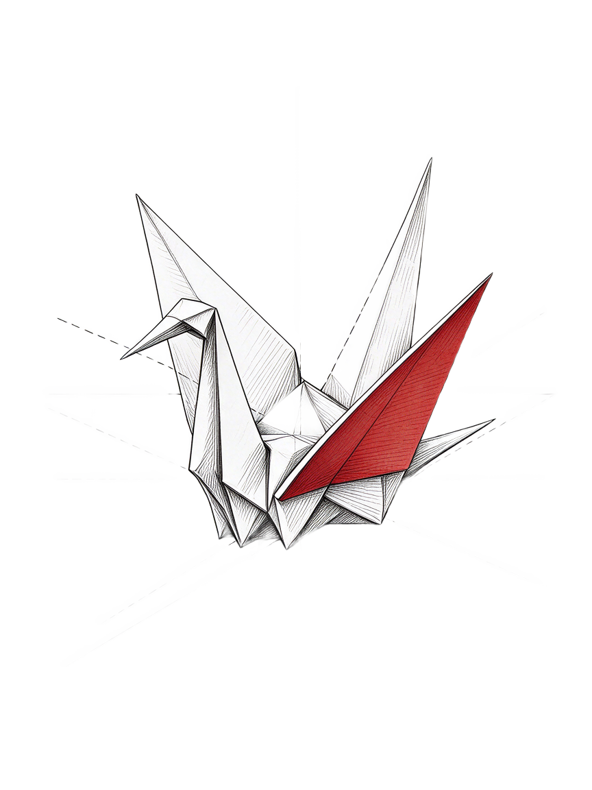
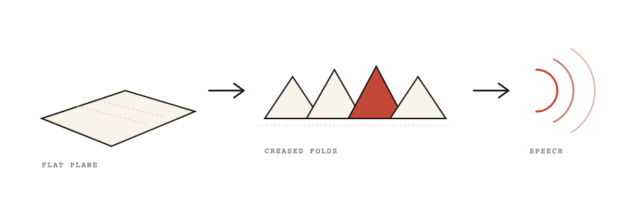

A · Axonometric patent
transparent PNG · XYZ construction


Crane generated + background removed. Dashed XYZ axes, sumi contour, one vermilion wing. Diagram is patent linework: flat plane → accordion folds (active fold vermilion) → speech arcs, all chevrons →.